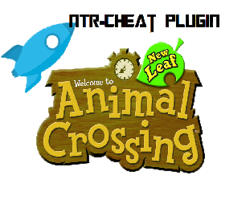

<!DOCTYPE html>
<html>
</html>

<html>
<title>ACNL NTR</title>
<head>
<style>
body {
    background-color: lightgreen;
}

h1 {
    font-family: Impact;
	color: white;
    text-align: center;
}

p {
    font-family: Lucida Sans Unicode;
    font-size: 15px;
}
</style>
</head>
<body>
<h1>Animal Crossing New Leaf NTR Plugin</h1>
<p>This here is the offical page for  the Animal Crossing New Leaf NTR plugin. The author is me, itsRyan or Ryan/RyDog.</p>
<p>Here's it in action: </p>
<iframe width="560" height="315" src="https://www.youtube.com/embed/uBqhoWB1EiM" frameborder="0" allowfullscreen></iframe>
<iframe width="560" height="315" src="https://www.youtube.com/embed/9tlNRpNvr6g" frameborder="0" allowfullscreen></iframe>
<p><strong>What's Included:</strong></p>
<p>This is a plugin that contains a collection of cheats for Animal Crossing New Leaf! These are heavily supported and added every day! Please help support any way you can! These are the cheats:</p>
<p>1. Text to Item</p>
<p>2. Duplication</p>
<p>3. Moon Jump</p>
<p>4. Coordinates Modifier</p>
<p>5. Teleport</p>
<p>6. Speed Hack</p>
<p>7. Seeder (Set, Destroy, Undo)</p>
<p>8. Search and Replace</p>
<p>9. Instant Tree</p>
<p>10. Destroy All Weeds</p>
<p>11. Water All Flowers</p>
<p>12. Grass</p>
<p>13. Desert</p>
<p>14. Nookling Upgrades</p>
<p>15. Maximum Tan </p>
<p>&nbsp;</p>
<p>&nbsp;</p>
<ol></ol>
</body>
</html>
